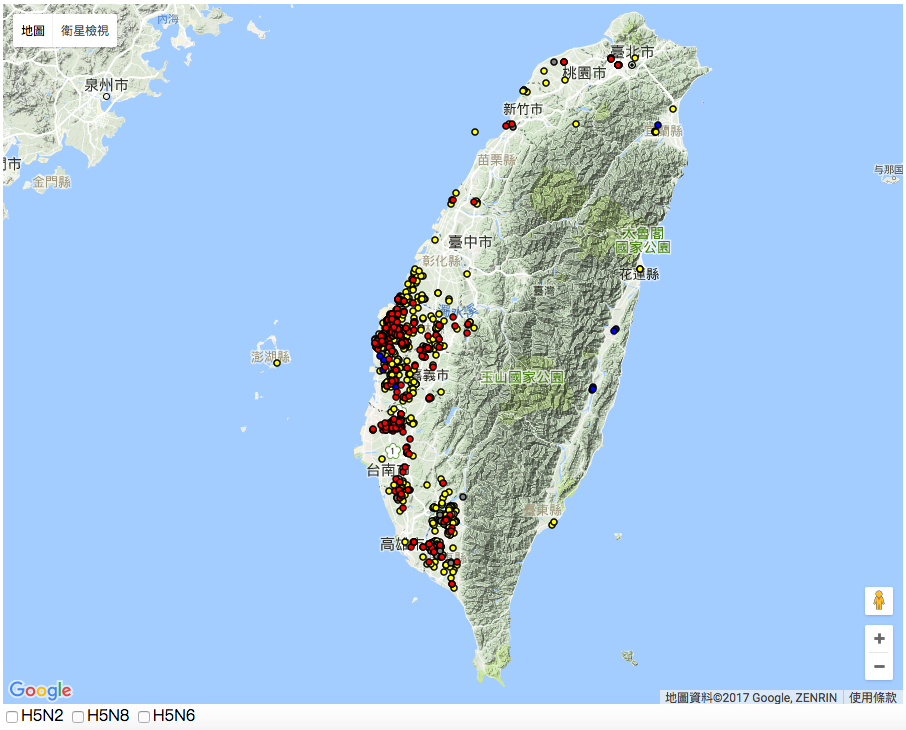

這次的專題，其實光在資料清洗上面，就花上將近十天的下班與休假時間，中間看不到盡頭的時候實在覺得人生很難，後來回想才發現其實真的可以少走很多冤枉路，關鍵在自己沒好好思考方法，要先檢討。
要開始抓資料之前，首先先來了解資料。因為之前工作的關係，已經知道世界動物衛生組織（OIE）網站上面可以抓到每一筆曾經爆發禽流感的禽場資料，像是經緯度、撲殺數也都可以獲知。
我國政府網站雖然已經將其禽場位置在地圖上標出，但背後的資料其實不太容易取得，只能看到一張台灣地圖上面有很多小點，也限制了一些應用的可能。
OIE上面的資料是一篇篇的通報單，同個國家中的同一種病毒，政府會不斷回報更新，直到有一定時間沒有再爆發新的疫情，政府就會通報結案（final report）。
因此，在這樣的背景之下，第一步要面對的就是找到已經結案的報告，或是還沒結案，但最新的一次通報單。然後，就要面對滿滿的pdf檔。
我們想要的資料在pdf上分成三行，但中間有合併儲存格，有些跨頁面的表格還會重複出現欄位。
曾經試過直接在pdf上複製貼上，但效果不佳，常常會複製到髒東西。
後來的做法是先轉成word檔，然後在貼到google spreadsheet上，然後一個一個點擊「取消合併儲存格」，機械化式的複製貼上很適合已經累一天的上班族，但時間也是大量流失。
有一個週日，我帶著筆電到摩斯漢堡想說要來拚一下，結果兩三個小時過去，還是在複製貼上，可能我滑鼠點擊的頻率太高很吵，後來有一位旁邊的陌生姐姐叫Tiffany要離開前突然走向我，她很好奇我在幹麻，也說在會計事務所上班的她對excel很有興趣，應該有方法可以迅速解決。
天啊，這個姐姐真是太熱心了，居然有這種事情發生，於是就這樣我寄了檔案給她，回家後我就收到清乾淨的成品了。這時我仔細看著她的作業痕跡，除了吃驚之外，更多的是慚愧，明明應該好好觀察資料之中的規律，然後想方法去過濾的呀，資料不整齊、不乾淨其實是藉口啊。
後來用Mac的Numbers的條件篩選（真心推薦），把三行分別篩乾淨，最後只要接起來即完成。其實也沒有特別寫什麼函數，資料也就初步排整齊了，每一行就是一個事件。接下來的工作，決定不再駑馬十駕了，要開始動腦來解決問題。
因為資料是來自OIE的關係，資料都是英文，但這對於最後的呈現其實有妨礙，所以要先來好好翻譯一番。
但問題來了，約1000筆的資料該如何把鄉鎮市區都精準翻譯過來呢？
這次的解法我是先下載了中華郵政提供的open data「縣市鄉鎮中英對照檔」，希望先建立一個明確dataset，然後用excel 或是 google spreadsheet的vlookup來自動查找。
但點進去連結後發現怎麼沒有下載檔案下來而是這種格式，只好自己開個編輯器複製下來另存，接著丟到線上工具，讓xml變成csv，變成我們方便利用的格式。
接下來我們發現重要的地名的欄位長的樣子是「臺北市中正區」、「Zhongzheng Dist., Taipei City」，所以還要先做拆解。
中文的部分我是用left, right函數，例如取左三右三，但做這件事之前可以先註記二字、四字的地名，例如「中區」、「阿里山鄉」、「東沙群島」等，之後另外處理。
英文的部分我直接用spreadsheet中「使文字隔成不同欄」的功能切開縣市、鄉鎮市區。
接下來用unique函數去除重複，但要小心因爲英文的一種表示法可能對應到兩種不同的中文，所以可以先註記哪些是會產生這種問題的資料。
這次做下來，可能發生這種狀況的包含：Luzhu Dist.可能是桃園市蘆竹區或是高雄市路竹區；Taoyuan Dist.可能是桃園市桃園區或是高雄市桃源區；Dongshi Township可能是雲林縣東勢鄉或是嘉義縣東石鄉，此外台中還有東勢區（Dongshi Dist.）；苗栗縣西湖鄉跟彰化縣溪湖鎮都叫做Xihu Dist.。
上述這些建議可以先篩選起來標記，避免vlookup無法對應到對的中文，最後再檢查一遍修正。
在vlookup的過程會發現因為寫法的問題無法對應，例如Dist.是我們要的，但有的資料寫District，這部分就要再修正。當然也會出現有打字拼錯的狀況致無法正確對應。
地名的轉換完成後，我覺得比較麻煩的會是記錄案例的禽種為何，這在當初的紀錄格式中滿紛亂，有加上幾日齡等等。
我接下來用Open Refine這套工具，輸入chicken, geese, goose, duck等關鍵字去做篩選，逐步建立物種的欄位。
此外，因為野鳥跟屠宰場相對於禽場的家禽，具有另一層的意義，也另外透過abattoir, wild bird等字去篩選，完成後即可輸出成csv。
接下來把檔案轉成json格式，我們也終於擁有一個乾淨的資料集了。
我們最早的規劃是想將泡泡畫在Google Map上，後來參考了相關的原始碼後雖然順利把資料匯進去，也做了呈現，可以把點呈現出來，然而後來就卡住了，發現如果要做相關的觸發好像不是好寫（也可能是我的問題）。

正當我邊苦惱的時候，網路上發現有人說Google Map跟d3.js其實沒有辦法有這麼好的搭配，反而開源的leaflet.js可以有卓越的效果。
結果，沒想到到幾個小時內，很快就解決當初觸發的問題了，太感謝那篇文章的作者，leaflet的程式碼也清楚好懂，更能用我們已經習慣的寫法來搭配。
不過在使用leaflet的時候也有一些地方值得注意，目前我的寫法所援引的版本是較舊的（0.7.7），這版在初始化圖層的寫法是map._initPathRoot();，這個在後面的版本好像不太適用了，我卡在這個滿重要的問題上，後來也沒解決，只能先用舊版的環境來寫下去。
因為探索資料的介面適合多選，以做一些交叉的分析，所以我先透過病毒種類的欄位建立五個不同的子資料集。然後我們再開一個空的陣列，用來存最新條件下的資料。每一次觸發事件後就會根據現在狀態刷新資料集，一步步concate在一起。另外也透過rollup來匯總資料，以各縣市為key，value是案例數。
如果病毒種類篩完之後，我們就來做時間的篩選。每次更新時會讀取現在的時間狀態，然後篩選出符合的資料，要注意的是要先new Date()把資料變成可以進行比大小的裝態，然後也在開一個過渡期的變數來存結果，用for迴圈檢視每一個陣列位置他的「爆發日期」欄位符不符合，最後再餵回去。
另外，在整個更新的過程中，每次都要先透過array.length=0進行清空，不然會一直沿用舊數據。
這次有加上了幾個細節，希望可以讓操作上更直觀跟美觀。例如在滑鼠滑過地圖時，不只有提示框出現，還讓讓泡泡變色；圓餅圖也同要調整了透明度；另外因為原本字都填上時，最後面比較比較小的幾塊會發生字疊字狀況，所以我們可以從去抓endAngle還有startAngle，兩者之差就是該扇形的角度，因為一圈2PI是360度，大概觀察後發現角度20度以上才放文字比較好，所以我們就再加上一個條件是endAngle-startAngle>=Math().PI*2/18，只讓符合者加入文字即可。
我們拿到的這些資料，在資料清洗的步驟時就已經修正大部分形式上的錯誤，可能是拼字等等，但是「內容」的錯誤我們卻不容易察覺。
也是到後來把資料畫在地圖上後，我們發現有些資料明顯有經緯度上的問題，一個在桃園外海、一個跑去非洲一帶了。如果再用後來建立提示框隨機瀏覽幾個資料也會發現，有疑似經緯度錯誤的狀況。
這些問題可能也涉及當初資料記錄的問題，不知道有沒有方法能夠先把全部的資料去核對它的經緯度，如果是有問題的資料我們就予以刪除。
視覺化讓人們發現原本藏在資料內的線索，但能不能看出更多端倪，甚至輔助人們做決策可能是後續亦相當重要的一步，有時候可能都還要更多的專家來一起跨領域合作，才能再提高視角跟深度。
在這次的專題中，我們試著用空間、時間、病毒種類等的角度去探索資料，看疫情的嚴重度，可以看到有些病毒局部爆發（如H5N3集中屏東），也再次回顧2015年1月多種病毒同時肆虐的事件。
我在想如何找出病毒擴散的方法跟原因，然後避免年年歷史重演，可能會是視覺化之後的重點，是不是天然的地理因素吸引野鳥，還是相關消毒流程沒有遵守，這些可能都是防疫的關鍵（可能公衛、獸醫學院、流行病學等專家會有一些專業想法）。
如果這份資料去套疊衛星圖或航照圖，說不定能檢視禽場的開放情形（遙想被我放棄使用的Google Map），還有周邊地形，是否吸引野鳥拜訪（例如有露天飼料、開放水域）。或者，若能設法調查出一個地方的運輸產銷路徑，加以套疊相關場址，或許也能釐清相關媒介（如貨車、飼料車）所造成的風險。